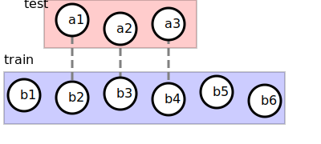

The idea comes from the fact that any routes of a destination passes through similar paths near the destination. Say in other words, anyone going to the entrance of NTU must pass through either Roosevelt Rd. or Xinsheng S. Rd. Hence, by computing the similarity of two taxi routes, we can pick top N training taxi routes which are the most similar to the testing route, and find the most promising destination among the training routes.
In details, we should define the similarity between two routes and find a way to tell the most promising destination among the top N similar routes.
For any two polylines, and where and are coordinates consisting of longitude and latitude, and . We define the distance as
subject to
where are the weights

Given the training set of polylines, and a test polyline . We can pick top N similar polylines similar to , which is .
We can pick the most promising destination by